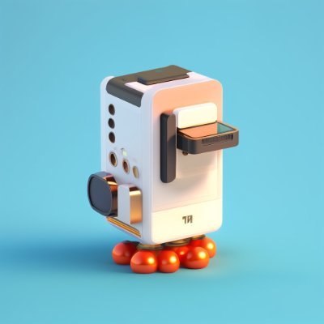

奶昔🥤
@realNyarime
@igeekbb 5万美元永远是5万美元，就跟BTC一样最高12w砍半6w，只要是1 BTC那永远是1个比特币，跟玩汇率一样

iGeekbb
@igeekbb
刚刚央视财经发视频酸美元，称投资者配置的美元定期存款到期结汇人民币时，产生的损失超过了利息收益，导致亏损。
网友评论 到期了不兑换继续存，再低也比存人民币高。 https://t.co/PZTWxnQSKw